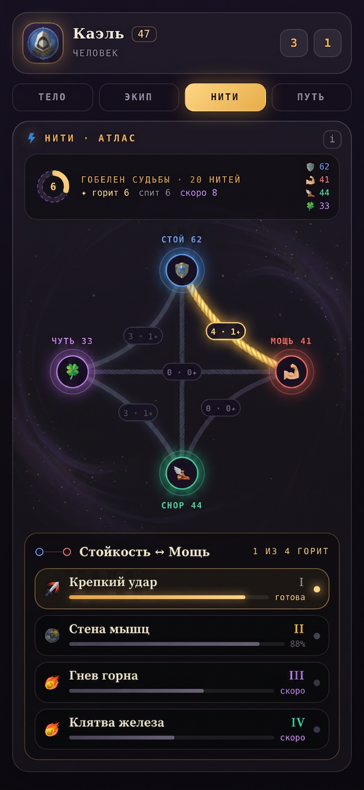
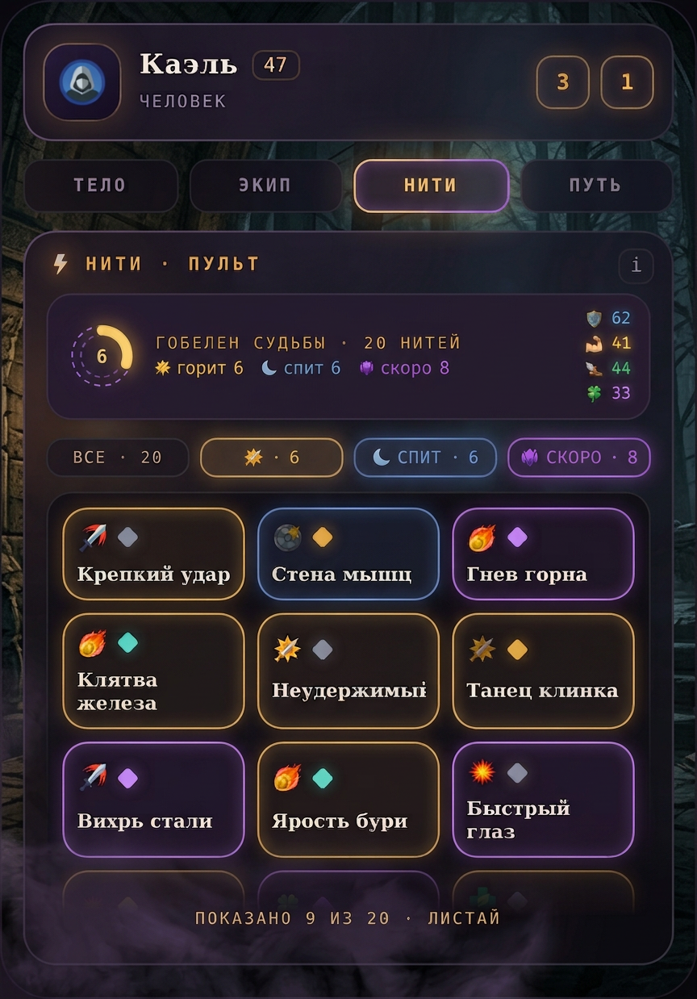
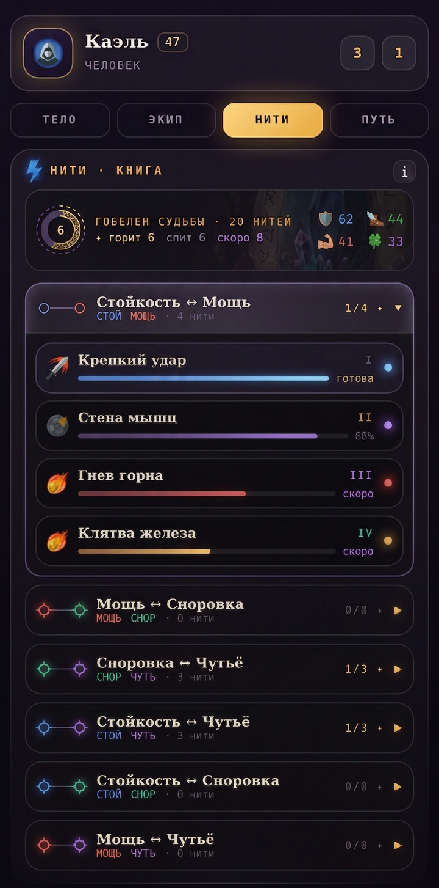
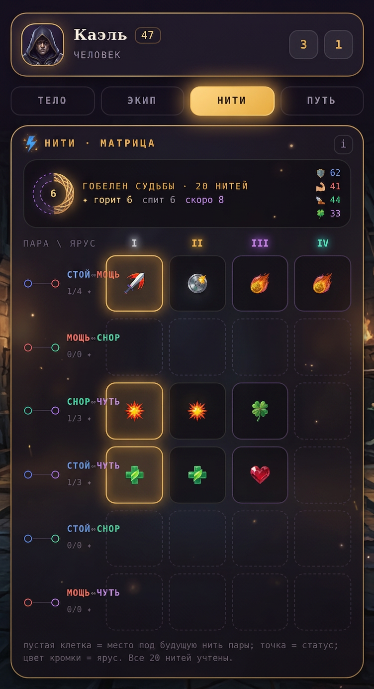

R4-A · Атлас нитей6 канатов-агрегатов между столпами, тап раскрывает список пары
R4-B · Пультфильтры-счётчики + вьюпорт-сетка фикс. высоты «9 из 20»
R4-C · Книга нитей6 глав-пар аккордеоном, открыта одна
R4-D · Матрица судьбы6 пар × ярусы I–IV, весь план одним кадром + резерв